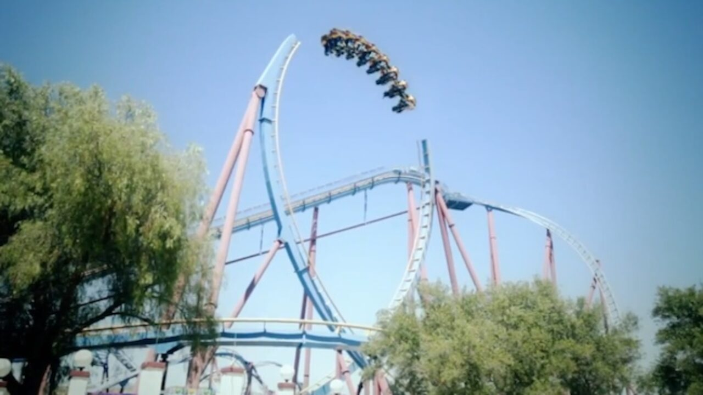
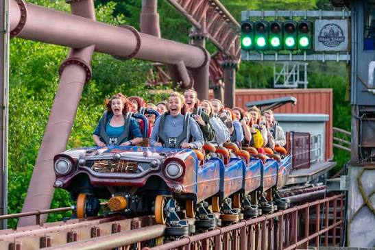
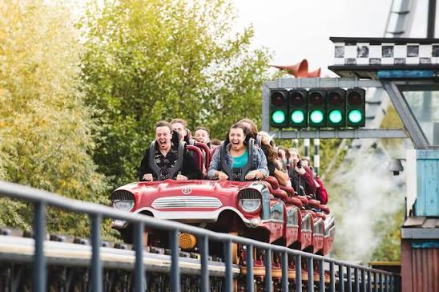
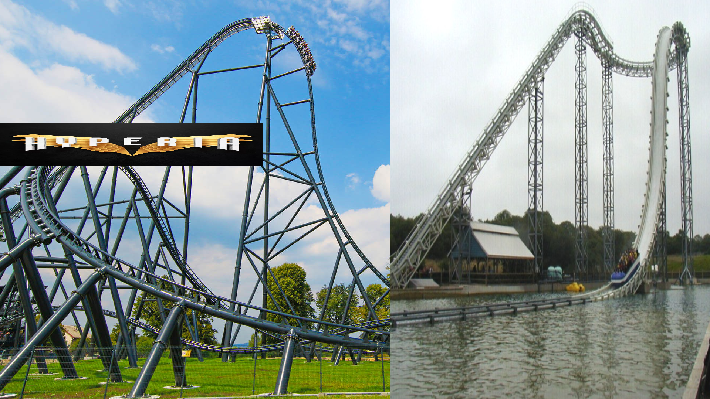

It is glazed to much for being the best coaster
remember people height != good woah python!!!!
the airtime is pretty good but the ride is 30 seconds long...
it decides to do this every other week!?!??!?!?

in my opinion the flying fish is the best mack rides gmbh & co kg product in the uk as its very thrilling!!!! who cares about icon, runaway mine train, storm chaser and whatever else we have!!!!

now i talk about monkey ride!!!
mandrill train funny cause the seats are yellow and its like mandrill is holding banana (i assume thats why the seats are yellow idk)

Theme park community is very strange... fun fact: i removed this funfact as it was not very fun...
spinning jesus coaster

ahhh rollercoaster unsafe!?!??!?!!?!?
Mackprodukt
Why Rita is better than Stealth (coming from a intellectual)
Number 1: Rita's train is better looking compared to stealth!
 your probably thinking but they are basically the same!!??!?!?! its just the stock intamin train...
Rita's has ten times more aura than stealths cause its got a tuff colour scheme!!!
Number 2: Rita's launch audio is 10 times more tuff (i think its more out of sync than stealths but that adds to the aura!!!)
Rita:
Stealth:
Number 3: Rita is tuff as its layout is epic!!!!
Stealth: Launch, Tophat, Airtime Hill, Brakes, Turn, Waiting Block, Turn, Transfer, Unload, Load.
Rita: Launch: Helix, Twisted Airtime Hill, Helix, Airtime Hill, Helix, Airtime Outerbank Hill Thing, Hop into slow down brakes, Turn, Trim Brake, Turn, Waiting Brake,Transfer, Unload, Load.
Rita is more tuff as its got more elements!! Stealth just has a tophat and airtime hill which you think would be good but no the brakes start when your meant to get airtime....
Rita is also more tuff as its got thirteen next door which is very tuff. (Gold Rush vs Thirteen soon!?!?!?!?!)
saw the ride is smooth!
coaster youtubers which i think are tuff